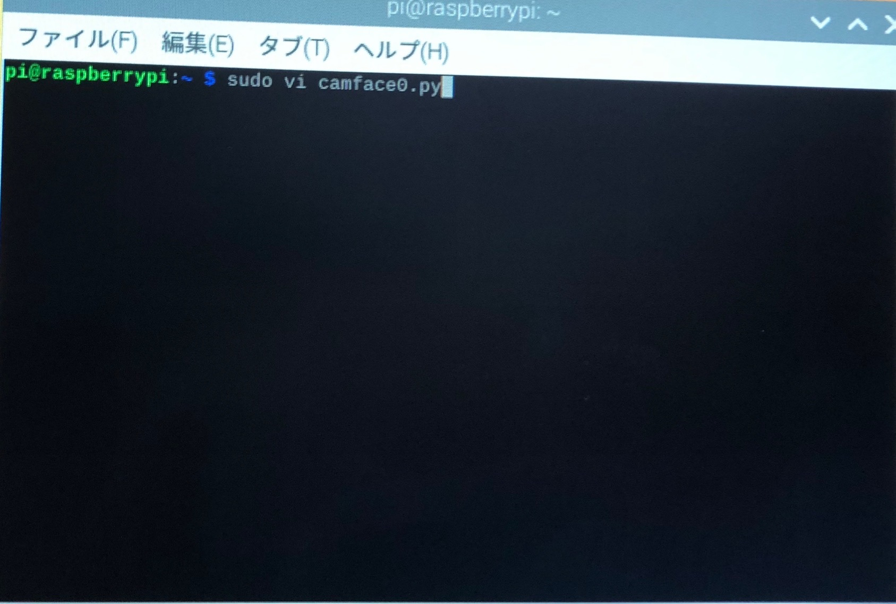

ちなみに、opencvとは
画像処理・画像解析および機械学習等の機能を持つ
オープンソースのライブラリのこと！
カメラが人の顔か、そうでないかを
判断するには
人の顔が含まれる画像の特徴をまとめたデータが必要である。
ちなみに、ラズパイのカメラを動かすプログラムは
"カスケード分類器”という。
この”カスケード分類器”が
opencvには予め用意されているのだ。
さて、前置きはここまでにして
ラズパイ＆opencvで顔検知を参照に
raspberry piのopencvの設定を行う。
しかし、いつ顔検知がされたのか
はたまた、きちんと顔検知ができているのかがわからなかったので、
Raspberry PiとOpenCVによる画像認識で人の顔を判別する を参照に
顔検知は行った。
◆顔と目に枠を描画するプログラム
次のコマンドをターミナル上に入力すると
カメラが起動して映像が出力され
一定時間経過すると、
カメラが撮影を開始して画像を保存する。
①「camface0.py」をvimで作成する画面を開く。
$ sudo vi camface0.py

viエディタが開いたら
「i」キーを押して「編集モードに」に移行し、
下記のソースコードをコピー＆ペーストする。
# -*- coding: utf-8 -*-
import time
import picamera
import cv2 as cv
fn = 'my_pic.jpg'
# カメラ初期化
with picamera.PiCamera() as camera:
# 解像度の設定
camera.resolution = (512, 384)
# 撮影の準備
camera.start_preview()
# 準備している間、少し待機する
time.sleep(2)
# 撮影して指定したファイル名で保存する
camera.capture(fn)
# 撮影した写真を読み込む
img = cv.imread(fn)
# 顔検出の処理効率化のために、写真の情報量を落とす（モノクロにする）
grayimg = cv.cvtColor(img, cv.COLOR_BGR2GRAY)
# 顔検出のための学習元データを読み込む
face_cascade = cv.CascadeClassifier('haarcascades/haarcascade_frontalface_default.xml')
# 目検出のための学習元データを読み込む
eye_cascade = cv.CascadeClassifier('haarcascades/haarcascade_eye.xml')
# 顔検出を行う
facerect = face_cascade.detectMultiScale(grayimg, scaleFactor=1.2, minNeighbors=2, minSize=(1, 1))
# 目検出を行う
eyerect = eye_cascade.detectMultiScale(grayimg)
print(facerect)
print(eyerect)
# 顔を検出した場合
if len(facerect) > 0:
# 検出した場所すべてに赤色で枠を描画する
for rect in facerect:
cv.rectangle(img, tuple(rect[0:2]), tuple(rect[0:2]+rect[2:4]), (0, 0, 255), thickness=3)
# 目を検出した場合
if len(eyerect) > 0:
# 検出した場所すべてに緑色で枠を描画する
for rect in eyerect:
cv.rectangle(img, tuple(rect[0:2]), tuple(rect[0:2]+rect[2:4]), (0, 255, 0), thickness=3)
# 結果の画像を表示する
cv.imshow('camera', img)
# 結果を書き出す
cv.imwrite(fn, img)
# 何かキーが押されるまで待機する
cv.waitKey(0)
# 表示したウィンドウを閉じる
cv.destroyAllWindows()
②プログラム実行
コピー＆ペーストができたら、
「編集モード」から「Esc」キーを押して「コマンドモード」に切り替え、
「Shift」キーを押しながら「z」キーボードを２回押してvimエディタを閉じる。
viエディタを閉じたら、
いよいよプログラムを実行してみます！！
下記コマンドを入力してプログラムを実行する。
$ sudo python camface0.py

上手くいくと
きちんと顔は赤枠、目は緑枠と認証するのですが
あまり上手くいかず、
はしごやTシャツも認識されるという事態が起きました笑
ここでわかったのは、
いかに "正確に画像認識を行うことが難しいか” を
実感しました。。
次回は、この画像認識とAIを使って
感情判定を行っていきます！